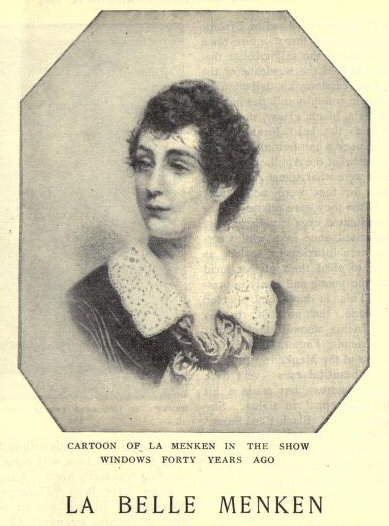

Thursday, July the 15th, 2010
back to: title, date or indexes
Many a moon ago, back in February 2004, I provided a couple of examples of the kind of invective to deploy when writing an unfavourable book review. The book in question was Ulysses by James Joyce—he invariably pronounced it “Oolissis”, by the way—and these were the passages I found so diverting:
“An immense mass of clotted nonsense”—Teachers' World
“The maddest, muddiest, most loathsome book issued in our own or any other time… inartistic, incoherent, unquotably nasty … a book that one would have thought could only emanate from a criminal lunatic asylum.”—The Sphere
I can now recommend a couple more such tirades, though in this case the book is less well-known. Adah Isaacs Menken (1835–1868) was an actress, painter, poet, possible bigamist, and bareback circus equestrienne, and in the last year of her life she published a volume of poetry entitled Infelicia. In order to drum up sales, the rumour was spread, perhaps by Menken herself, that some, or all, of the poems were in fact written by her pal Algernon Charles Swinburne. However, all of them had previously appeared in various American magazines before she even met Swinburne. Infelicia‘s lack of success may have been due, at least partly, to reviews such as these:
“A wilderness of rubbish and affected agonies of yearnings after the unspeakable, which achieve the nonsensical.”—The Athenaeum
“A bleared panorama of deaths and sighs and blood and tears and fire and general gloom and watery ghastliness.”—The Saturday Review

Hooting Yard on the Air, July the 15th, 2010 : “Eggs, Stick” (starts around 23:56)